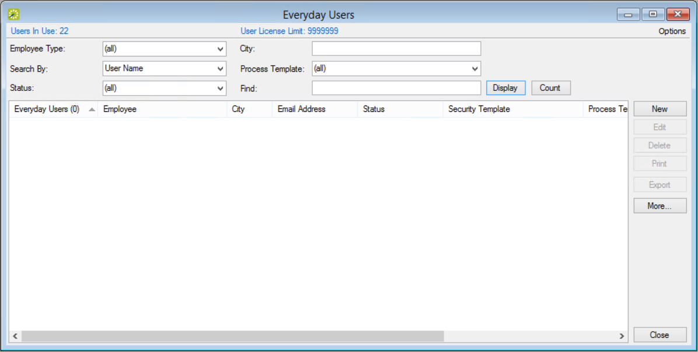
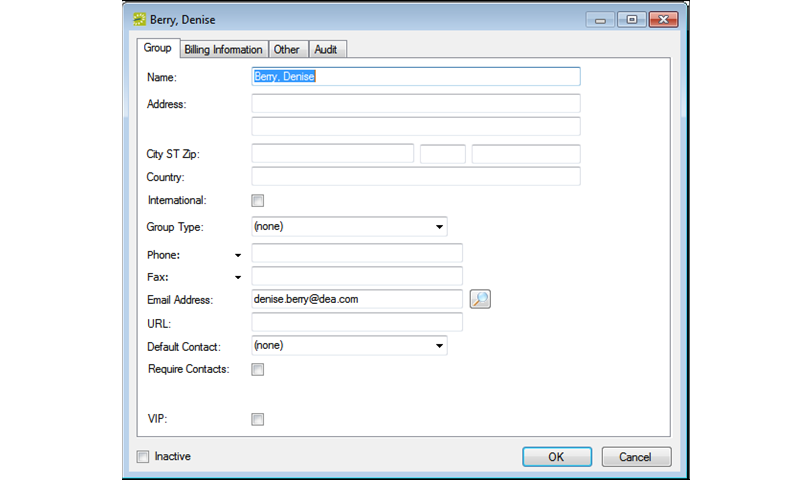
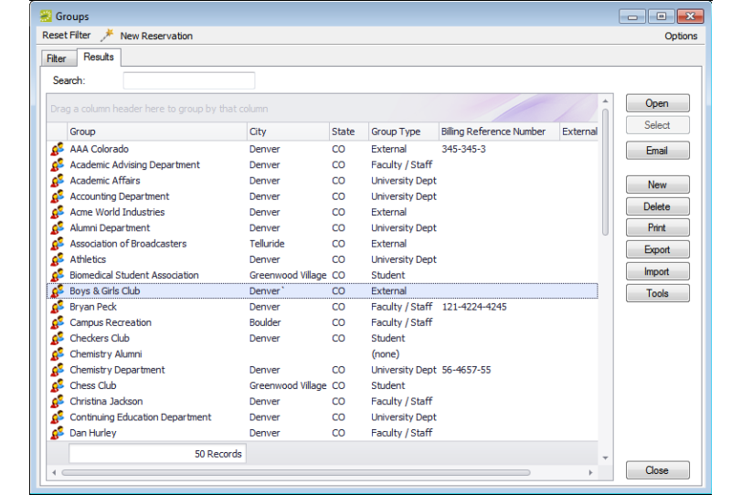
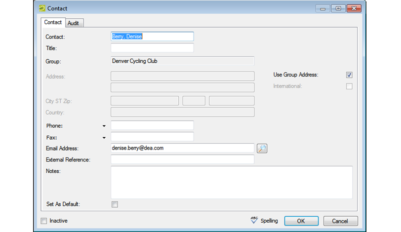

This topic provides information on the following:
After you have configured a new user, you can create groups and contacts from the user.

Everyday Users Window
If you leave the Find field blank, a list of all currently active users appears. This field is not case-sensitive, but entries must be in the correct order. For example, a search string of Bar returns Barry Jones, but not Amanda Barry.

Group Tab

Groups Window, Results Tab

Contact Dialog Box
You can click Spelling to spell-check before saving.
Contact Tab Field Descriptions
|
Field |
Description |
|---|---|
|
Contact |
By default, the Contact field is populated with the name of the user that you selected, but you can edit this value if needed. The name can be a maximum of 50 characters, including spaces. |
|
Title |
The job title of the Contact. |
|
Group |
Populated with the name of the Group that you selected. You cannot change this value. |
|
Address |
Populated with the address of the Group that you selected. If the Contact address is not the same as the Group address, then clear Use Group Address and enter the appropriate values in the Address fields. |
|
International |
Select this option to drop the State and Zip fields for an international group. |
|
Phone and Fax |
The phone number and fax number for the group. The Phone and Fax fields have a dropdown list available on which you can select a different value (Fax, Mobile, Other, or Phone) for the field label, or you can enter a user-defined value. To enter a user-defined value, double-click the current field label to select it, and then enter the user-defined value over the selected label. |
|
Email Address |
The email address for the contact. If your computer is connected to a network, click the Search icon to open a Global Address Lookup dialog box and search for the email address. |
|
External Reference |
Links the contact to an outside program or another EMS record if needed. |
|
Notes |
Any other information that is pertinent for the contact. This information only displays within the EMS Desktop Client. |
|
Set as Default |
Select this option if the contact is to be the default Contact for the selected Group. If a default Contact has been defined for a Group, then when you specify the Group information for a reservation, the Contact field is automatically populated with the name of the default Contact.
You can always specify a Contact as the default contact for a selected Group at a later date. To do so, select the Contact in the right pane of the Group-specific window, click Set Default, and then click Yes at the prompt to set the selected user as the default contact. |
|
Inactive |
Leave this option blank to add the Contact as an active Contact. Select this option to de-activate the Contact. |